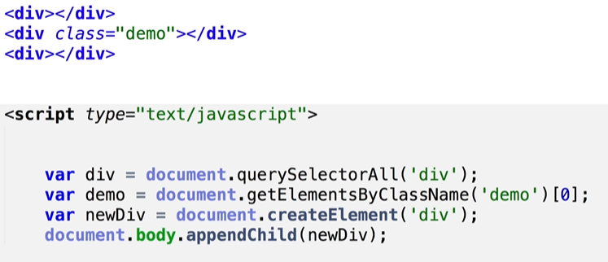

一、什么是DOM
DOM — > Document Object Model
DOM定义了表示和修改文档所需的对象、这些对象的行为和属性以及这些对象之间的关系。DOM对象即为宿主对象，由浏览器厂商定义，用来操作html和css功能的一类对象的集合。也有人称DOM是对HTML以及XML的标准编程接口。
二元素选择器
- document
- 代表整个文档
- document.getElementById()
- 元素id 在Ie8以下的浏览器，不区分id大小写，而且也返回匹配name属性的元素
- document.getElementsByTagName()
- 标签名
- document.getElementsByName()
IE不支持需注意，只有部分标签name可生效
表单，表单元素，img，iframe
- document.getElementsByClassName()
- 类名 -> ie8和ie8以下的ie版本中没有，可以多个class一起
- document.querySelector()
- css选择器，在ie7和ie7以下的版本中没有
- document.querySelectorAll()
- css选择器，在ie7和ie7以下的版本中没有
三、遍历节点树
关系类选择：基于一个元素通过辐射性的关系对周边的元素进行选择，任何浏览器都可以用
parentNode：父节点 (最顶端的parentNode为#document);
childNodes：子节点们
firstChild：第一个子节点
lastChild：最后一个子节点
nextSibling：后一个兄弟节点
previousSibling：前一个兄弟节点
例题：
四、遍历元素节点树
parentElement -> 返回当前元素的父元素节点 (IE9及IE9以下不兼容)
children -> 只返回当前元素的元素子节点
node.childElementCount === node.children.length当前元素节点的子元素节点个数(IE9及IE9以下不兼容)，记node.children.length就行
firstElementChild -> 返回的是第一个元素节点(IE9及IE9以下不兼容)
lastElementChild -> 返回的是最后一个元素节点(IE9及IE9以下不兼容)
nextElementSibling / previousElementSibling ->返回后一个/前一个兄弟元素节点（IE9及IE9以下不兼容)
五、为什么开发过程中根本就不用document.querySelector()、document.querySelectorAll()
因为这两种选择器选出来的元素不是实时的
例

- 这里的
document.querySelectorAll("div")选中的是div的一个副本 以后不管div怎么变换都和他没关系